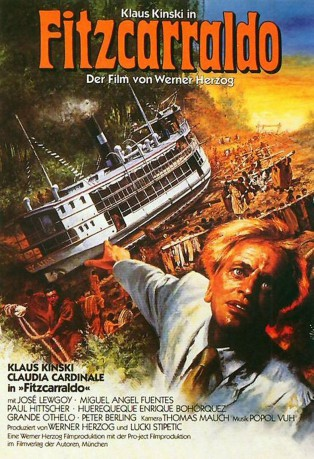

#4173 Fitzcarraldo
 
 IMDB-Wertung: 8.2 / 10
IMDB-Wertung: 8.2 / 10  Tomatometer: 77
Tomatometer: 77  Metascore: 0
Metascore: 0 
Der exzentrische Brian Sweeney Fitzcarraldo ist von der Idee besessen, mitten im unberührten Amazonas-Dschungel ein großes Opernhaus zu bauen. Von den Ersparnissen seiner Freundin, der Bordell-Besitzerin Molly, kauft Fitzcarraldo einen alten Flussdampfer. Um die gefährlichen Stromschnellen einer Flussmündung zu umgehen, entwickelt Fitzcarraldo einen atemberaubenden Plan: Hunderte von Indios sollen das riesige Schiff über eine unpassierbare Urwaldhöhe transportieren.
Jahr: 1982
Dauer: 157 Minuten
FSK: 12
Land: West-Deutschland Studio: 'Publishing and Broadcasting Theatrical'Tonspuren:
Untertitel:
Auflösung: 1080p (1920x1040) Größe: 12288 MB
Genre: Abenteuer, Drama
Regisseur:  Werner Herzog
Werner Herzog
Drehbuch: Jeff Maguire
Soundtrack:
Darsteller:
 Klaus Kinski als Brian Sweeney Fitzgerald - 'Fitzcarraldo'
Klaus Kinski als Brian Sweeney Fitzgerald - 'Fitzcarraldo' Claudia Cardinale als Molly
Claudia Cardinale als Molly- José Lewgoy als Don Aquilino
 Jean-Claude Dreyfus als Opera Singer , uncredited
Jean-Claude Dreyfus als Opera Singer , uncredited- Miguel Ángel Fuentes als Cholo
- Paul Hittscher als Captain, Orinoco Paul
- Huerequeque Enrique Bohorquez als Huerequeque, The Cook
- Grande Otelo als Station master
 Peter Berling als Opera Manager
Peter Berling als Opera Manager- David Pérez Espinosa als Chief of Campa Indians
- Milton Nascimento als Black Man At Opera House
- Ruy Polanah als Rubber Baron
- Salvador Godínez als Old Missionary
- Dieter Milz als Young Missionary
- William Rose als Notary
- Leoncio Bueno als
- Isabel Jimines de Cisneros als Opera Singer , uncredited
- Jesús Goiri als Opera Singer , uncredited
- Veriano Luchetti als Opera Singer , uncredited
- Lourdes Magalhaes als Opera Singer , uncredited
- Christian Mantilla als Opera Singer , uncredited
- Costante Moret als Opera Singer , uncredited
- Dimiter Petkov als Opera Singer , uncredited
- Mietta Sighele als Opera Singer , uncredited
- Liborio Simonella als Opera Singer , uncredited
Datei: X:\1982\Fitzcarraldo (1982, FSK12, 1920x1040).mkv seit 28.07.2016
Festplatte: HD 1980-1986
 Es gibt insgesamt 31 Filme in der Gruppe '1982'
Es gibt insgesamt 31 Filme in der Gruppe '1982'